ESTAMPILLAS PRO
MANUAL DEL LIQUIDADOR DEL APLICATIVO EN LÍNEA
En este manual, se describe el funcionamiento del aplicativo de estampillas. Como primer paso, se debe abrir un navegador de internet y digitar la dirección: www.softwareenlanube.net:8086/estampillas-pro/, allí debe ingresar el usuario y contraseña (el cual ha sido proporcionado por el administr ador del sistema) y dar clic en ingresar.
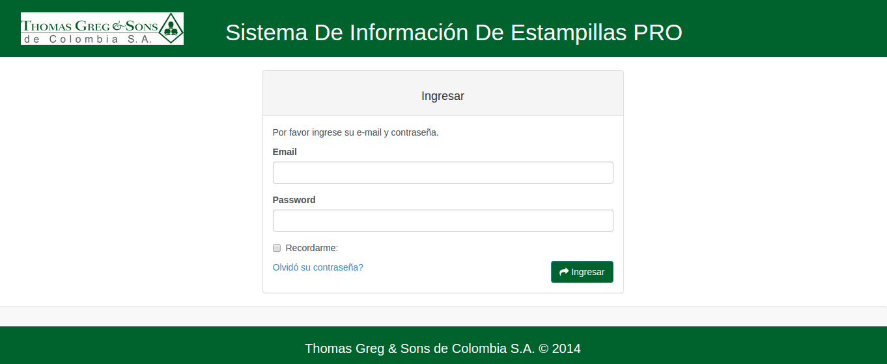
Una vez ingresado al sistema, se direcciona a la pagina principal donde encontrará los contratos que se encuentran en proceso de liquidación.
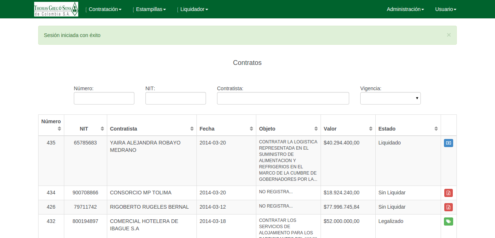
PROCESO CONTRATACIÓN
Contiene las opciones habilitadas para la administración del proceso de liquidación de contratos.
- CONTRATOS
-
Contratistas Agrega, los contratistas.
- Nuevo Contratista
Muestra el formulario para la creación de un nuevo contratista.
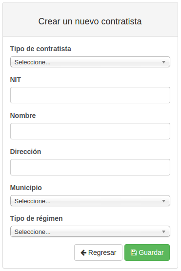
- Nuevo Contratista
Muestra el formulario para la creación de un nuevo contratista.
-
PROCESO LIQUIDADOR
Contiene las opciones habilitadas para realizar el proceso de liquidación de contratos y/o tramites.
-
Liquidaciones
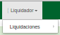
-
Liquidar
-
Contratos Muestra el listado de contratos sin liquidar, liquidado, legalizado.
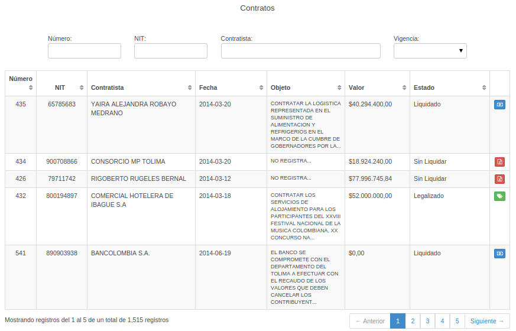
Para visualizar la información de la liquidación dar click en los botones.
Sin liquidar
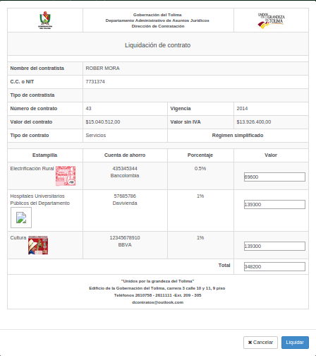
Si el contrato no se encuentra liquidado,el valor de las estampillas es editable y visible el boton liquidar.
Liquidado
identificado con el botón.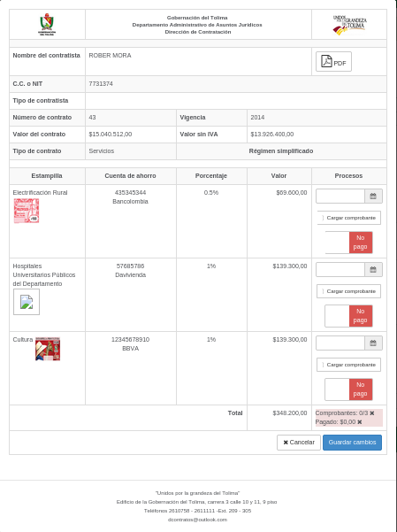
Muestra el formulario para el cargue del soporte de la consignacion en formato pdf, jpeg, gif, png, tif. obligatorio para cada uno de las estampillas liquidadas, igualmente la fecha que tiene el comprobante, la cual (No debe ser mayor a la fecha actual).Legalizado
identificado con el botón.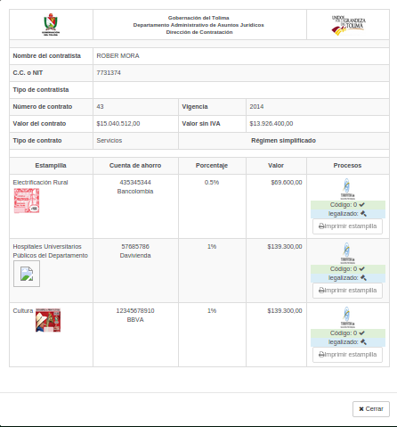
Muestra el formulario para impresion de la estampilla. Para el perfil administrador se encuentra inhabilidato el botón de imprimir ya que esta función es propia del perfil liquidador.
-
-
Tramites Muestra el listado de tramites sin liquidar, liquidado, legalizado. Nota: La liquidación y legalizacion del tramite se debe realizar el mismo proceso que se realiza para los contratos
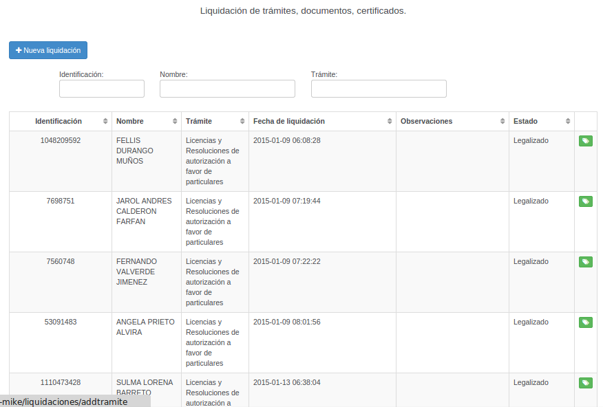
- Consultar
Muestra el listado de tramites y contratos realizados, permite realizar el filtro del informe para una fecha en especifico.
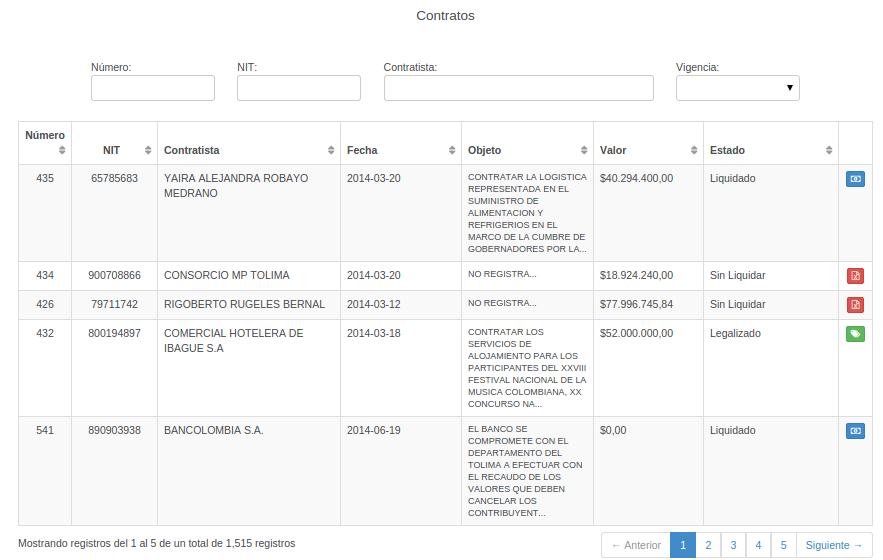
-
PROCESO USUARIO
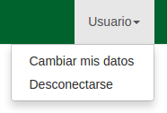
-
Cambiar mis datos Lista y actualiza los datos del usuario.
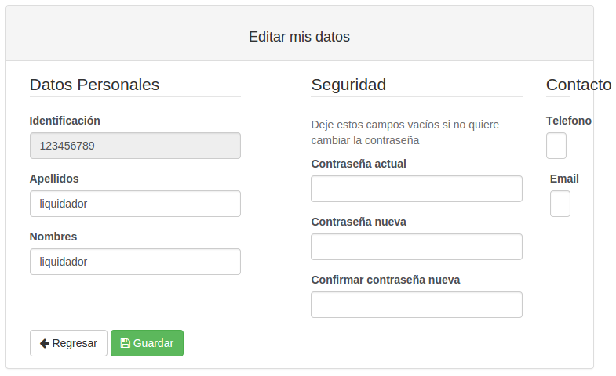
-
Desconectarse Salir del aplicativo.
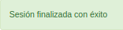